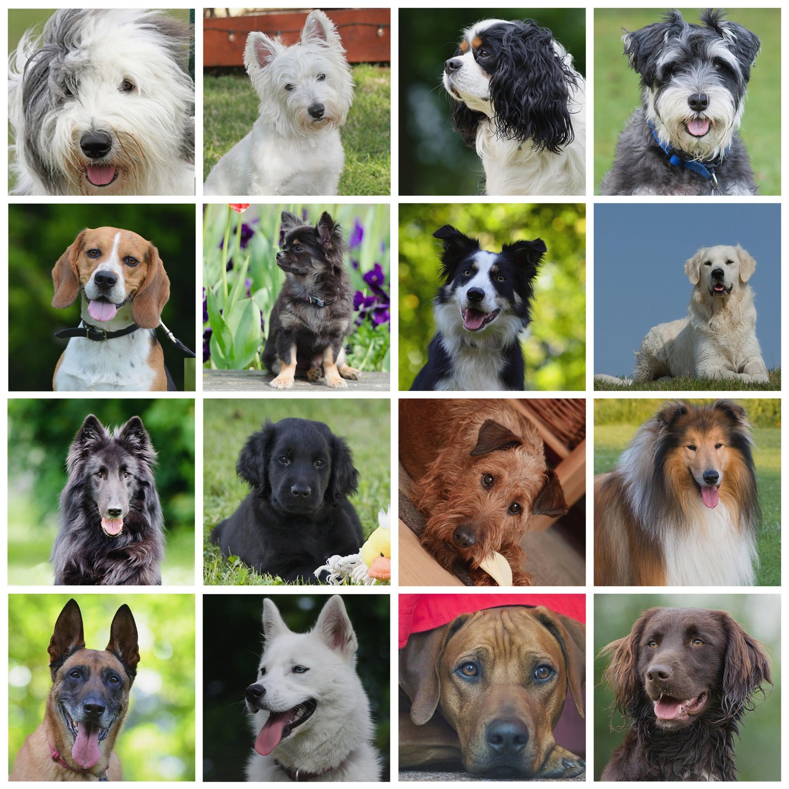

Dogs are my favorite animal, because I have always loved how adorable and loyal they are. I have a dog myself, and she's a cheagle (chihuahua-beagle mix). She is just over a year old, and ever since we got her, I felt like my overall happiness/mood increased to the plus side.


Every dog person has a different preference. One thing I love about dogs are their variety. Take a chihuahua and a great dane, for instance. Each dog has its own personality, which makes them even more loveable. They also come in all sorts of colors, to tend to each persons' desires.
Dogs are known for being playful.
Dogs are known as "Man's best friend" for a reason. They love their owner since day 1, and don't leave their side. They provide you with company at all times, preventing you from any loneliness. Researchers explored how dogs would react to their owners when they were upset, and compared that to how they would react with complete strangers when they were upset. In the end, whether the owner or stranger cried, the dog would nuzzle and sniff each alike. Since dogs love their owner, they endure through whatever to stay at your side, which is truly an amazing thing.